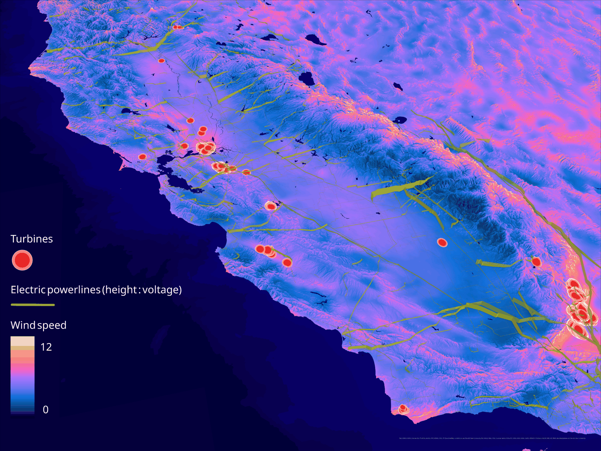
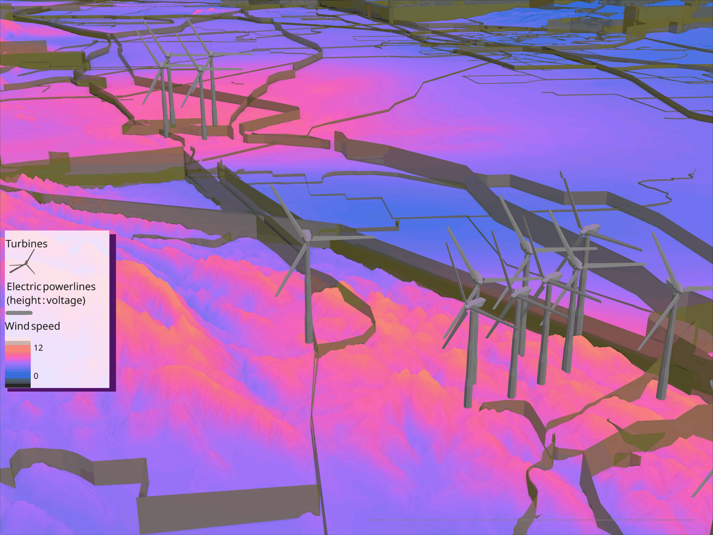

Siting Wind in California
What actually makes a good wind farm site — wind resource, terrain, and access to grid that can carry the power — worked into a siting model and rendered as a 3D scene where the transmission network stands at a height set by its voltage.


The question
Wind alone does not explain where turbines get built. Terrain matters, consistency may matter more than peak speed, and a site with an excellent resource is worthless if connecting it means thirty miles of new high-voltage line.
Working backwards from what exists
Rather than asserting thresholds, the analysis reads criteria off the installed fleet. Extract Values to Points pulls elevation, slope, and Global Wind Atlas wind speed onto every existing California turbine; Near measures the distance from each to the closest transmission line above 115 kV. The resulting histograms are the output — they show what interconnection distance and what terrain the industry has actually accepted.
The 115 kV filter is the constraint, not a refinement. Turbines generate at 690 V to 34.5 kV, far too low to move power any distance, so proximity to line that can carry the output is what separates a viable project from an uneconomic one.
The 3D scene
Wind speed renders as a continuous surface from 0 to about 12 m/s, with transmission extruded so height encodes voltage. On a flat map voltage becomes a colour competing with everything else; given height, the question of whether a site sits near grid that can take its output resolves in one look.
Scaling to a siting model
- Tessellate the state into equal cells so every candidate location is comparable.
- Remove what is disqualified outright — built-up areas, protected land.
- Score the remainder on the variables the histograms flagged: wind, slope, elevation, distance to high-voltage line.
- Rescale each to 0–1 and weight them, since metres, degrees, m/s, and miles cannot be combined directly.
- Combine into one suitability surface — the same fuzzy-overlay logic as the ocean carbon removal work.
Fire exposure
California's wind corridors overlap its fire country. Buffering turbines by five miles and intersecting with the high-risk classes from the emerging hot spot analysis counts how much of the fleet sits inside a fire regime that is active or worsening — a hazard trajectory the resource assessment never looks at.
Land cover, ownership, road access, and protected-area proximity all belong in a real siting decision and are not in this one.